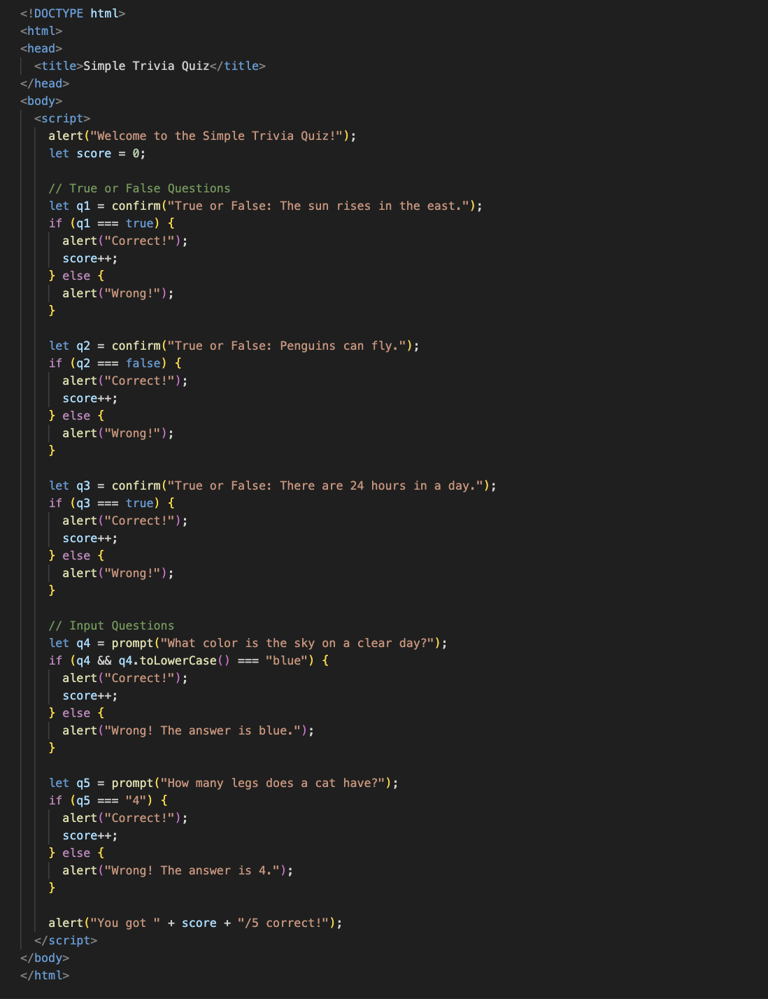

Unit 2: Expanding My Coding Skills
In this unit, I learned how HTML, CSS, and JavaScript work together to make an interactive website. I practiced using alert() and confirm() to create pop-ups that react to the user. It was cool to see how a few lines of code could make a page feel alive. I also got better at debugging by testing my code carefully when it didn’t work as expected.
Pop-Up Boxes Quiz

For this project, I built a simple trivia quiz in JavaScript. It starts with an alert() to welcome the player, then uses confirm() for True/False questions. I learned how to store answers in a score variable and use if statements to check each result. My main challenge was getting the score to update and making sure each confirm() returned the right boolean. I fixed it by printing checks with console.log(), watching when true or false came back, and adding the missing score++. Testing one step at a time made the logic clear.
CSS Practice Project


In this activity, I learned how to use different CSS selectors like IDs, classes, and compound selectors to style a webpage. One challenge I had was remembering to add a semicolon at the end of each line. When I forgot, parts of my code stopped working. I fixed this by checking my work carefully, getting help from my friends to spot the mistakes, and reminding myself to always add the semicolon after every style. It helped me keep my CSS neat and working properly.
HTML Practice Page


I focused on clean HTML with headings, paragraphs, links, and lists. I used <div> boxes to group sections so the page felt organized. I did forget a few closing tags at first, which broke the layout. I fixed it by matching each opening tag with its closing tag and checking the structure from top to bottom. After that, the page displayed properly and looked neat.
In the project, I learned how to create a simple webpage using HTML. I learned about headings like h1 and how to write paragraphs using the p tag. I also added a link and an image to mkae my page more intresting. I tried using inline styles to change colors and see how styling works. One challenge I had was forgetting to close my tags properly, which made parts of my page disappear. I fixed it by checking my code carefully and matching each opening tag with closing tag.